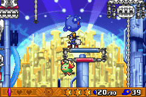
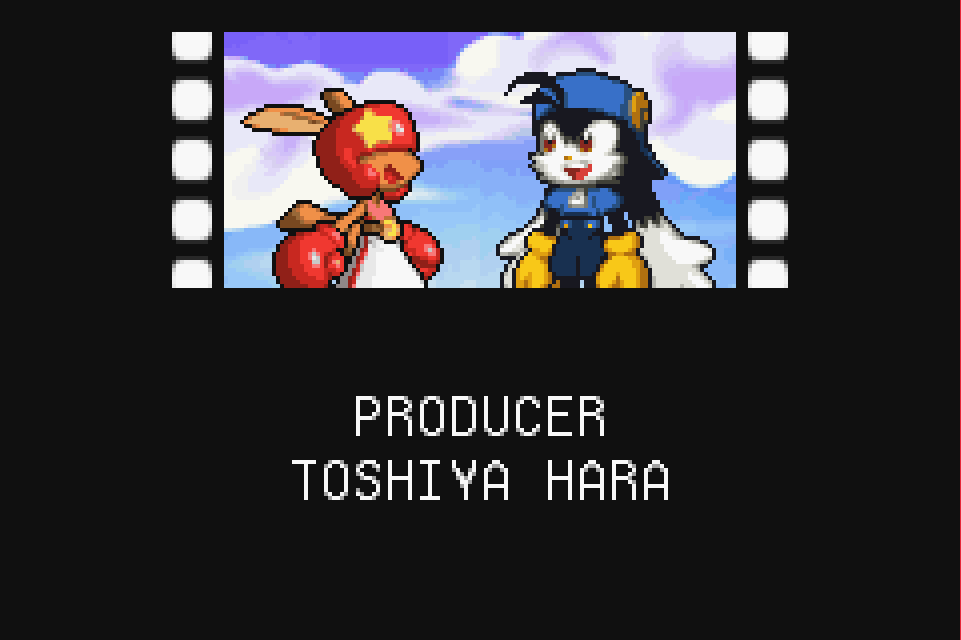
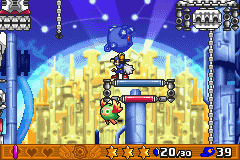
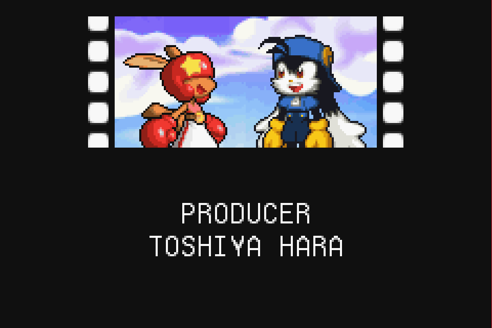

Klonoa 2: Dream Champ Tournament

Complete on 2018-05-4
3 / 5
Release Date: Feb 23, 2005
Meta Score: 78
Screenshots
 



Notes
Klonoa 2 is a platformer, in the not-particularly-big-or-successful Klonoa series*. The 2 refers to this game being the second in the GBA sub-series, but the first one didn't make the list (for some reason, possible an oversight in metacritic as it seems to have been decently reviewed).
I'd describe it as a puzzle platformer, which revolves around your ability to pick up enemies and throw them using a "wind bullet".
The game has a story which is actually told in game (primarily through cutscenes before every world and boss). The main character and some friends have been abducted to take part in a tournament to determine the greatest hero. After some initial surprise they don't seem particularly put out about this. There's a rival character who is a massive dickbag but inevitably has a redeeming moment at the end (although arguably this is self preservation, as he indirectly saved himself by saving the hero). Eventually it becomes apparent the guy organizing the tournament is the real bad guy after all, turning the losers into gears to form part of his machine empire. It's not Shakespeare, but it gets the job done and is a little more involved than a lot of platformers. All of this is told through surprisingly verbose cutscenes with slowly scrolling dialog, which was a little annoying.
Basic gameplay is basic platforming, with the picking up and throwing of enemies as a twist. You can double jump by throwing an enemy down too. In each stage you need to find the 3 stars and get to the exit, passing through multiple rooms. Enemies are mostly non-threatening, respawn almost instantly, and are mainly used as tools to get around. In addition to basic enemies that you just throw, some have special effects when grabbed, like blasting you up higher or start the fuse on a bomb. In general, the levels are (mostly) more puzzley than actiony. Puzzles weren't too hard except for the last world, mostly involving classic elements like putting boxes on pressure plates, and I felt it dragging a bit around 2/3rds of the way through.
In each stage there are a bunch of optional collectibles too, which I mostly ignored. In the minigame/autoscroller stages these are annoying to collect as if you miss them you can't go back. There are tutorial and plot-related messages and hints left scattered around throughout the game. This was a bit too "tell don't show" for my taste, at least after the initial controls tutorial.
The game does have some annoyances. Grabbed enemies are prone to just disappearing if anything slightly unexpected happens, like colliding with the player. This is frustrating when it happens unexpectedly during a long puzzle solution forcing you to start over. Also the bomb enemies are annoying. They'll spontaneously explode when thrown into most things, *except* the things they can actually destroy, forcing you to wait out the timer. There's also one underwater stage which is just like a normal stage except everything is in slow motion. This was especially dumb.
Some of the levels deviate from the basic formula. There is a minigame level in each world where you ride a hoverboard in a 3d level with 2d sprites. Collision and depth perception were a bit dodgy. There's also an autoscroller in each world which becomes a bit less puzzley due to the constant movement forced. Finally there are boss levels. These are actually more like timed stages, as you are racing against an unseen rival to make it to the end. Sometimes you have to fight minibosses along the way though (some of which are obnoxious). The final boss is a traditional boss fight though.
The game isn't too long: 5 worlds of 9 levels each (2 of which are optional in each world), plus a final boss. The final world cranks up the difficulty a little more.
Overall, nothing stellar or mindblowing, but a solid enough game.